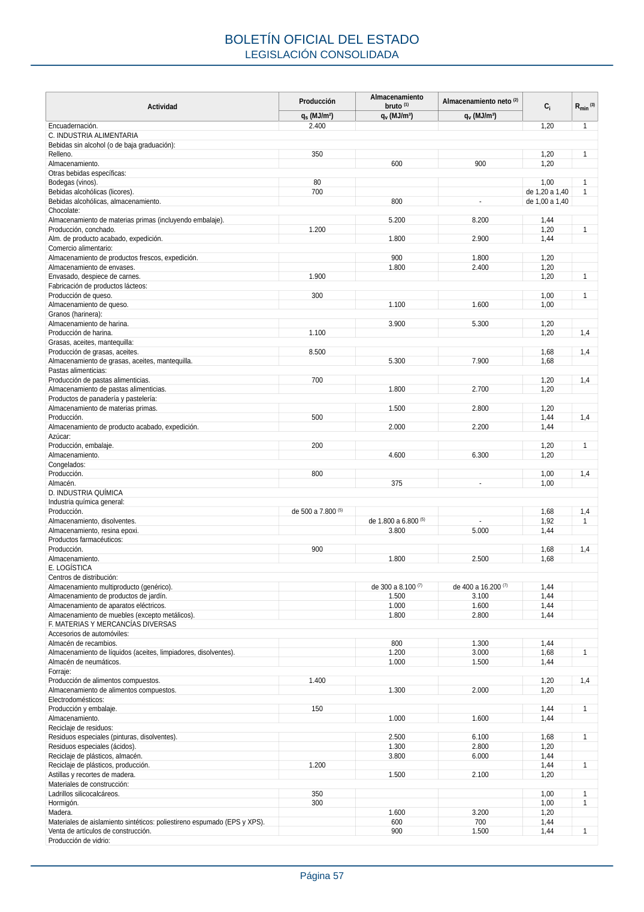

RSCIEI · Página 57 · versión 2025-04-10
SHA256: 85aa0af25d51e5b58d8975a4eefbf76d3f57a8933445cfe814ae9c4818a2e3e7 · página física 57 de 108 · métodos de encabezado
solo si están cotejados.
Formatos: Markdown · JSON de bloques · PDF p. 57 · imagen PNG
Actividad Producción Almacenamiento bruto (1) Almacenamiento neto (2) Ci Rmin (3) qs (MJ/m²) qv (MJ/m³) qv (MJ/m³) Encuadernación. 2.400 1,20 1 C. INDUSTRIA ALIMENTARIA Bebidas sin alcohol (o de baja graduación): Relleno. 350 1,20 1 Almacenamiento. 600 900 1,20 Otras bebidas específicas: Bodegas (vinos). 80 1,00 1 Bebidas alcohólicas (licores). 700 de 1,20 a 1,40 1 Bebidas alcohólicas, almacenamiento. 800 - de 1,00 a 1,40 Chocolate: Almacenamiento de materias primas (incluyendo embalaje). 5.200 8.200 1,44 Producción, conchado. 1.200 1,20 1 Alm. de producto acabado, expedición. 1.800 2.900 1,44 Comercio alimentario: Almacenamiento de productos frescos, expedición. 900 1.800 1,20 Almacenamiento de envases. 1.800 2.400 1,20 Envasado, despiece de carnes. 1.900 1,20 1 Fabricación de productos lácteos: Producción de queso. 300 1,00 1 Almacenamiento de queso. 1.100 1.600 1,00 Granos (harinera): Almacenamiento de harina. 3.900 5.300 1,20 Producción de harina. 1.100 1,20 1,4 Grasas, aceites, mantequilla: Producción de grasas, aceites. 8.500 1,68 1,4 Almacenamiento de grasas, aceites, mantequilla. 5.300 7.900 1,68 Pastas alimenticias: Producción de pastas alimenticias. 700 1,20 1,4 Almacenamiento de pastas alimenticias. 1.800 2.700 1,20 Productos de panadería y pastelería: Almacenamiento de materias primas. 1.500 2.800 1,20 Producción. 500 1,44 1,4 Almacenamiento de producto acabado, expedición. 2.000 2.200 1,44 Azúcar: Producción, embalaje. 200 1,20 1 Almacenamiento. 4.600 6.300 1,20 Congelados: Producción. 800 1,00 1,4 Almacén. 375 - 1,00 D. INDUSTRIA QUÍMICA Industria química general: Producción. de 500 a 7.800 (5) 1,68 1,4 Almacenamiento, disolventes. de 1.800 a 6.800 (5) - 1,92 1 Almacenamiento, resina epoxi. 3.800 5.000 1,44 Productos farmacéuticos: Producción. 900 1,68 1,4 Almacenamiento. 1.800 2.500 1,68 E. LOGÍSTICA Centros de distribución: Almacenamiento multiproducto (genérico). de 300 a 8.100 (7) de 400 a 16.200 (7) 1,44 Almacenamiento de productos de jardín. 1.500 3.100 1,44 Almacenamiento de aparatos eléctricos. 1.000 1.600 1,44 Almacenamiento de muebles (excepto metálicos). 1.800 2.800 1,44 F. MATERIAS Y MERCANCÍAS DIVERSAS Accesorios de automóviles: Almacén de recambios. 800 1.300 1,44 Almacenamiento de líquidos (aceites, limpiadores, disolventes). 1.200 3.000 1,68 1 Almacén de neumáticos. 1.000 1.500 1,44 Forraje: Producción de alimentos compuestos. 1.400 1,20 1,4 Almacenamiento de alimentos compuestos. 1.300 2.000 1,20 Electrodomésticos: Producción y embalaje. 150 1,44 1 Almacenamiento. 1.000 1.600 1,44 Reciclaje de residuos: Residuos especiales (pinturas, disolventes). 2.500 6.100 1,68 1 Residuos especiales (ácidos). 1.300 2.800 1,20 Reciclaje de plásticos, almacén. 3.800 6.000 1,44 Reciclaje de plásticos, producción. 1.200 1,44 1 Astillas y recortes de madera. 1.500 2.100 1,20 Materiales de construcción: Ladrillos silicocalcáreos. 350 1,00 1 Hormigón. 300 1,00 1 Madera. 1.600 3.200 1,20 Materiales de aislamiento sintéticos: poliestireno espumado (EPS y XPS). 600 700 1,44 Venta de artículos de construcción. 900 1.500 1,44 1 Producción de vidrio: BOLETÍN OFICIAL DEL ESTADO LEGISLACIÓN CONSOLIDADA Página 57
